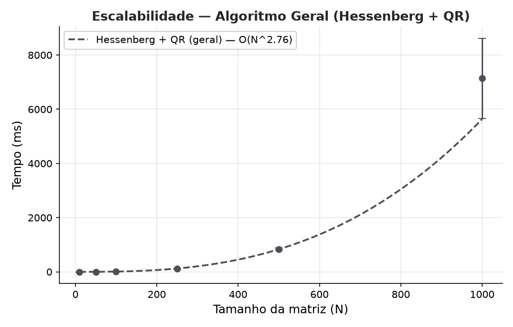
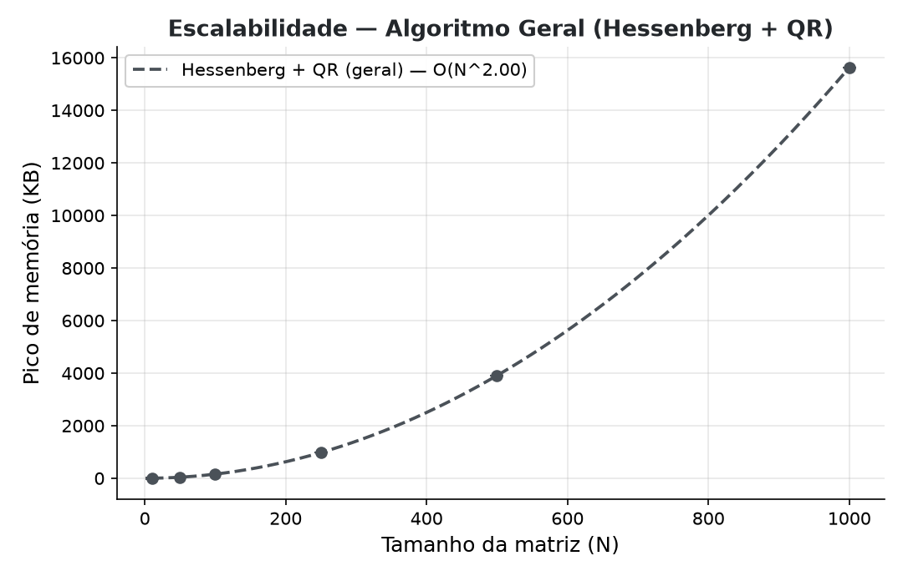
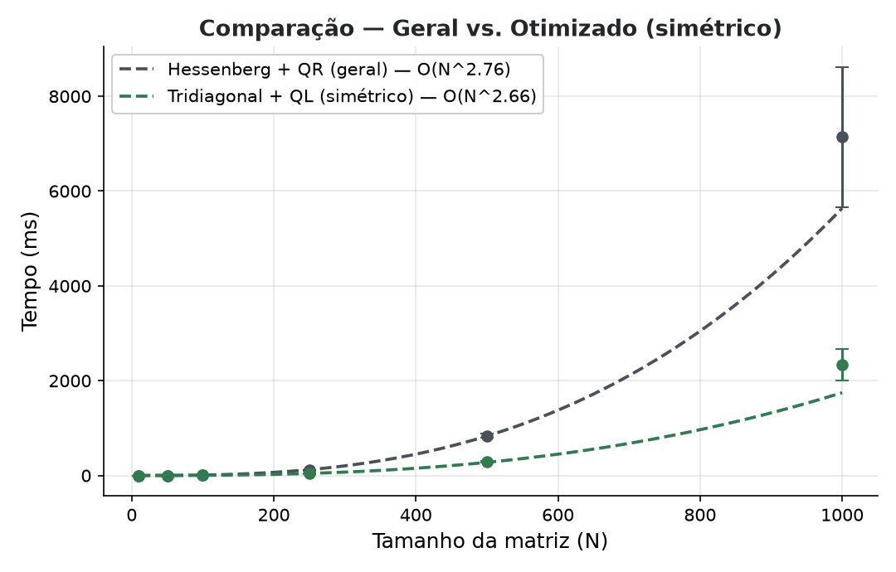
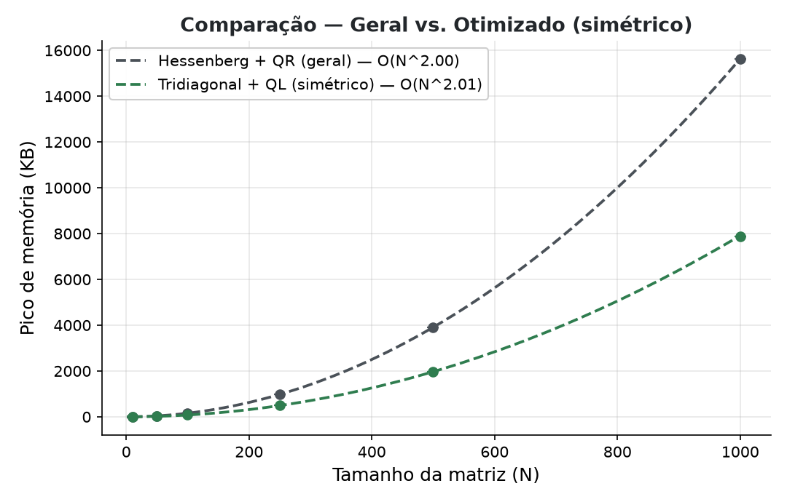

Universidade Federal de Goiás · Equações Diferenciais Ordinárias
Antonio Couto · 202400305
Miguel Bertol · 202400315
Implementação em C++17
Sistema para cálculo numérico de autovalores de matrizes quadradas genéricas, desenvolvido em C++17.
Teorema de Abel-Ruffini: para matrizes de ordem $N \geq 5$, não existe fórmula fechada para as raízes do polinômio característico.
⟹ Métodos iterativos são a única alternativa viável.
Matrix — $N\times N$ densa, row-majorVector — produto escalar, norma $L_2$SymmetricTridiagonal — só diag e offdiagstd::vectorSymmetricTridiagonalArmazena apenas dois vetores em vez de uma matriz densa:
diag — $N$ entradas (diagonal principal)offdiag — $N-1$ entradas (sub/superdiagonal)Representação compacta de $\mathbf{O(N)}$ em vez de $O(N^2)$ — central para a otimização da Fase 3.
Fase 1
Householder → Hessenberg → Iteração QR com shift de Wilkinson
Refletor ortogonal: $\;P = I - 2\mathbf{v}\mathbf{v}^T$
Dado $\mathbf{x}\in\mathbb{R}^m$, escolhemos $\mathbf{v}$ para zerar tudo menos a 1ª componente:
$$P\mathbf{x} = -\text{sign}(x_0)\,\|\mathbf{x}\|_2\cdot\mathbf{e}_1$$A escolha do sinal $\text{sign}(x_0)$ evita cancelamento catastrófico: somamos na direção do componente dominante, e o denominador nunca se aproxima de zero.
// householder.cpp
double sign = (x[0] >= 0.0) ? 1.0 : -1.0;
v[0] = x[0] + sign * x_norm; // soma na direção dominante
for (std::size_t i = 1; i < len; ++i) v[i] = x[i];
double v_norm = v.norm();
for (std::size_t i = 0; i < len; ++i) v[i] /= v_norm;Para $PA$ (pela esquerda), por coluna $j$: projeção $p=\mathbf{v}^T\mathbf{a}_j$, depois $a_{ij} \leftarrow a_{ij} - 2v_i\,p$.
// apply_householder_left — custo O(m) por coluna, nunca forma P
for (std::size_t col = col_start; col < col_end; ++col) {
double projection = 0.0;
for (std::size_t i = 0; i < len; ++i)
projection += v[i] * A(row_start + i, col);
for (std::size_t i = 0; i < len; ++i)
A(row_start + i, col) -= 2.0 * v[i] * projection;
}A aplicação pela direita ($AP$) é a lógica transposta, sobre linhas.
Hessenberg superior: zera tudo abaixo da 1ª subdiagonal.
$$H(i,j) = 0 \quad \text{para } i > j+1$$Reduzimos $A$ por transformações de similaridade $A \leftarrow P_kAP_k^T$, que preservam os autovalores.
Após $N-2$ passos: $H$ em forma de Hessenberg, mesmos autovalores de $A$. Custo $O(N^3)$, dominado pelos produtos matriz-refletor.
Dada $H_k$, fatoramos $H_k = Q_kR_k$ e recombinamos:
$$H_{k+1} = R_kQ_k = Q_k^T H_k Q_k$$Mesma similaridade ⟹ autovalores preservados; sob certas condições a subdiagonal converge a zero, revelando os autovalores na diagonal.
$N-1$ rotações, cada uma zerando um elemento da subdiagonal:
$$\begin{bmatrix} c & -s \\ s & c \end{bmatrix} \begin{bmatrix} h_{ii} \\ h_{i+1,i} \end{bmatrix} = \begin{bmatrix} r \\ 0 \end{bmatrix}$$Coeficientes com branching numérico: se $|h_{i+1,i}| > |h_{ii}|$, usa-se $\tau = -h_{ii}/h_{i+1,i}$ para evitar overflow.
além do enunciado O enunciado (§1.2) pede QR puro: $H=QR$, $H_{k+1}=R_kQ_k$, iterar até convergir.
Mas o QR puro converge só linearmente, à taxa $|\lambda_{i+1}/\lambda_i|$. Com autovalores de magnitude próxima (comuns nas matrizes aleatórias da Fase 2) a razão $\to 1$ e a convergência estagna.
No limite — autovalores de igual magnitude, ex. pares $\pm\lambda$ — a iteração não-deslocada nunca converge.
⟹ Sem shift, o próprio benchmark da Fase 2 não terminaria. O shift não é refinamento: é necessário para a corretude prática.
Acelera a convergência escolhendo um shift $\mu$ a cada iteração:
$$\mu = \text{autovalor de } \begin{bmatrix} h_{n-1,n-1} & h_{n-1,n} \\ h_{n,n-1} & h_{n,n} \end{bmatrix} \text{ mais próximo de } h_{n,n}$$Aplica QR a $(H-\mu I)$ e recupera o shift ⟹ $h_{n,n-1}$ converge cubicamente para zero.
Quando a subdiagonal é desprezível (critério relativo, $\varepsilon=10^{-10}$):
$$|h_{i+1,i}| < \varepsilon\,(|h_{ii}| + |h_{i+1,i+1}|)$$Custo: $O(N^2)$ por iteração QR · $O(N)$ iterações ⟹ $O(N^3)$ na fase QR.
Fase 2
Benchmark: $N\in\{10,50,100,250,500,1000\}$ · 20 amostras por tamanho
-std=c++17 -O2As bandas $O(N)$ da tridiagonal (Fase 3) cabem confortavelmente em cache L1/L2 para todos os $N$ testados.
| $N$ | tempo (ms) |
|---|---|
| 10 | 0,02 |
| 50 | 1,09 |
| 100 | 7,55 |
| 250 | 106,4 |
| 500 | 823,2 |
| 1000 | 6685,6 |
Ajuste empírico: $T(N)\sim O(N^{2{,}76})$ — compatível com $O(N^3)$ teórico

gráfico: média ± desvio
| $N$ | memória (KB) |
|---|---|
| 10 | 0 (< granul.) |
| 50 | 40 |
| 100 | 156 |
| 250 | 976 |
| 500 | 3908 |
| 1000 | 15636 |
$M(N)\sim O(N^{2})$ — aloca duas matrizes densas $N\times N$ ($2N^2$ doubles)

gráfico: média ± desvio
Fase 3
$A = A^T \Rightarrow$ o problema colapsa para tridiagonal
Se $A=A^T$, a redução de Householder produz uma tridiagonal simétrica.
Prova. Cada $P_k = P_k^T = P_k^{-1}$. A similaridade preserva a simetria:
$$(P_kAP_k^T)^T = P_kA^TP_k^T = P_kAP_k^T$$Simétrica e Hessenberg (nula abaixo da subdiagonal) ⟹ só sobra a diagonal e as duas adjacentes ⟹ tridiagonal.
O programa aplica o algoritmo geral de Hessenberg a uma matriz simétrica e verifica que a maior entrada fora da banda tridiagonal é:
$\sim 10^{-16}$ (precisão de máquina)
Ou seja: o colapso não é só teórico — acontece até o último bit.
Atualização simétrica de rank-2 no bloco $B=A(k\!+\!1\!:,\,k\!+\!1\!:)$:
$\mathbf{p} = 2B\mathbf{v}$
$\mathbf{w} = \mathbf{p} - (\mathbf{v}^T\mathbf{p})\mathbf{v}$
$B \leftarrow B - \mathbf{w}\mathbf{v}^T - \mathbf{v}\mathbf{w}^T$
// tridiagonal.cpp — rank-2 update
for (std::size_t i = 0; i < m; ++i) {
double sum = 0.0;
for (std::size_t j = 0; j < m; ++j)
sum += A(col+1+i, col+1+j) * v[j];
p[i] = 2.0 * sum; // p = 2 B v
}
// w = p - (vᵀp) v ; B -= w vᵀ + v wᵀPreserva a simetria algebricamente; estado próprio em $O(N)$.
tqli)QR sobre a forma tridiagonal, operando só nos dois vetores $d$ (diag) e $e$ (subdiag). Para cada índice $l$:
$O(N)$ por iteração · $O(N)$ iterações ⟹ $O(N^2)$ total (vs. $O(N^3)$ do geral).


Mesmos eixos da Fase 2, agora com o caminho
simétrico (verde) sobreposto — a separação cresce com $N$.
gráficos: média ± desvio de 20 amostras
| $N$ | ganho tempo | ganho memória |
|---|---|---|
| 10 | 50% | — |
| 50 | 61% | 60% |
| 100 | 64% | 51% |
| 250 | 65% | 49% |
| 500 | 65% | 50% |
| 1000 | 67% | 50% |
Fase 4
$N=100$ reatores de mistura perfeita em série
Dinâmica de concentrações por um sistema linear de EDOs:
$$\frac{d\mathbf{C}}{dt} = A\mathbf{C}$$$A$ é tridiagonal simétrica:
Construída diretamente como SymmetricTridiagonal ⟹ caminho otimizado.
Fórmula analítica dos autovalores (tridiagonal simétrica de Toeplitz):
$$\lambda_k = -2{,}5 + 2\cos\!\left(\frac{k\pi}{N+1}\right)$$Máximo: $\lambda_{\max} = -2{,}5 + 2\cos\!\left(\dfrac{\pi}{101}\right) \approx -0{,}50$
Todos os autovalores têm $\text{Re}<0$ ⟹ sistema assintoticamente estável: as concentrações convergem ao estado estacionário.
$S\approx 9$ é baixo (muito abaixo do limiar $10^3$) ⟹ sistema não-rígido.
Consequência de engenharia: pode-se usar com segurança um solver explícito (RK4), evitando o custo de métodos implícitos.
Três efeitos acumulados, todos derivados de $A=A^T$:
Resposta: CPU.
Se memória fosse o limite, os ganhos seriam proporcionais. A diferença mostra que a redução de operações de ponto flutuante — não a economia de alocação — é o fator dominante.
Explorar a estrutura do problema vale mais que força bruta.
Obrigado! · Antonio Couto · Miguel Bertol · UFG